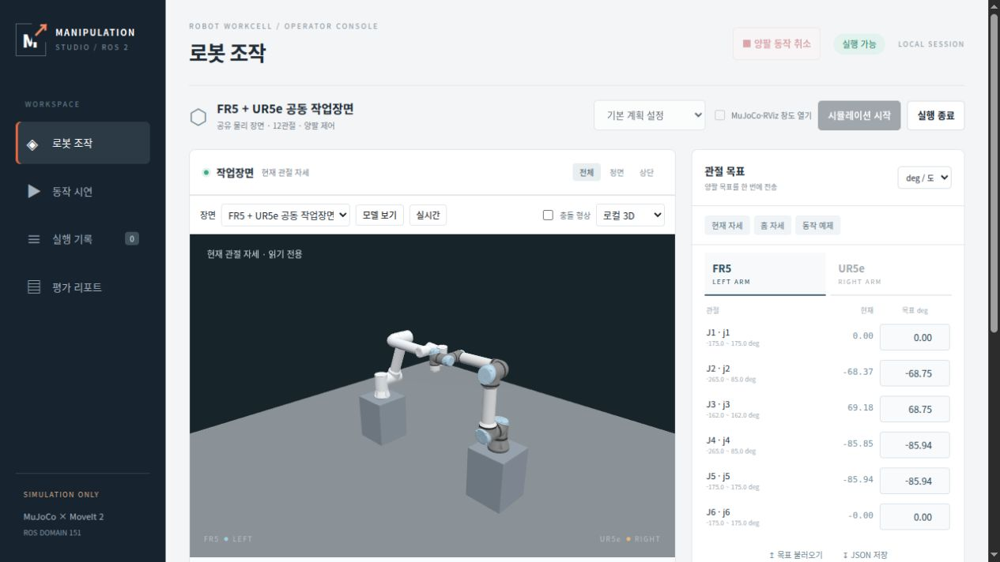
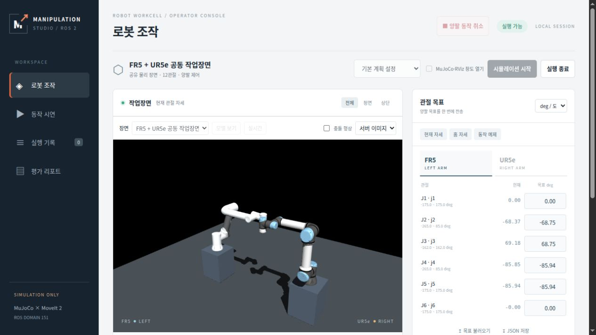

평가 범위와 판정
예비 평가동일 FR5·UR5e 장면의 실시간 정지 자세에서 제품 기본 JPEG/WebGL 표시를 방식별 15초×3구간 비교했습니다. 화면 그리기, 새 데이터 전달, 반복 HTTP 본문과 서버 자원을 구분합니다.
- WebGL의 화면 그리기는 평균 59.95 FPS, 새 자세 적용은 평균 4.00회/초입니다. 같은 자세를 반복해서 그린 프레임도 화면 FPS에 포함됩니다.
- JPEG는 45초 동안 프레임 요청 180건 중 179건이 200, 1건이 204였습니다. 성공 이미지 응답은 3.98장/초이며 실제 paint FPS는 측정하지 않았습니다.
- 상태 API를 포함한 반복 HTTP 응답 본문량은 JPEG 122.99 → WebGL 67.50 kB/s로 45.1% 감소했습니다. 초기 메시와 HTTP 헤더·요청·전송계층·계측 probe는 제외합니다.
- 평가 서버와 자식 프로세스의 시간가중 CPU 합계는 JPEG 58.64% / WebGL 59.28%였습니다. 100%는 코어 하나이며 전체 서버 CPU 감소는 확인하지 못했습니다.
- 같은 프로세스의 RSS 합계는 평균 1142.18 → 1030.36 MiB였습니다. 공유 페이지 중복이 있고 브라우저 메모리는 포함하지 않습니다.
- 관측 시뮬레이션 실시간 배율은 두 방식 모두 약 1.00입니다. 로봇 명령은 전송하지 않았고 계획·제어 성능의 개선을 측정한 시험은 아닙니다.
해석의 한계
- 하나의 FR5·UR5e 장면에서 실시간 상태를 받는 정지 home 자세를 비교했습니다. 방식별 15초 창 3개(45초)이며 독립적인 새 실행 3회가 아닙니다. 순서는 WebGL1 → JPEG1 → JPEG2 → WebGL2 → WebGL3 → JPEG3입니다.
- 제품 기본 설정 비교입니다. JPEG는 960×640·품질 88, WebGL은 621×414·DPR 1, 브라우저는 1280×720입니다. 카메라·조명과 픽셀 수를 맞춘 렌더 엔진 효율 비교가 아닙니다.
- WebGL의 초기 메시 3,417,204 bytes는 지속 전송량에서 제외했습니다. 장면 binding이 바뀌면 자산을 다시 받으므로 모든 세션의 총 전송량이 45.1% 줄어든다는 뜻은 아닙니다.
- 기존 사용자 세션은 유지했고 벤치마크 전용 유휴 장비가 아닙니다. 브라우저의 실제 GL 렌더러, CPU·GPU·VRAM, 카메라 입력→paint, 이동 궤적·원격 환경·최초 표시 시간은 미측정입니다.
- 브라우저 DOM 계측은 1초 간격의 최신 지표 스냅샷입니다. 구간별 15개, 방식별 45개이며 독립 프레임 45개나 독립 실험 45회가 아닙니다. CPU는 창별 30표본 중 경계 내부 29구간(약 14.5초)을 사용했습니다.
- JPEG와 WebGL의 상태 age는 시작·종료 시점이 달라 직접 비교하지 않습니다. 서버 GET 처리 시간과 CPU 렌더 명령 제출 시간도 종단 지연이나 GPU 완료 시간이 아닙니다.
- CPU·RSS는 평가 콘솔의 자손만 집계합니다. RSS는 공유 페이지를 중복 계산하고 브라우저 자원은 제외합니다. 계측용 HTTP 래퍼와 추가 2Hz probe가 있으며 probe 본문은 전송률에서 제외했습니다.
- 이 측정의 코드 기준은 1a44f19입니다. 이후 추가한 줌·감도 조작의 성능 측정으로 취급하지 않습니다. 기존 250ms 자세 조회 구조를 바꾸지 않은 표시 비교입니다.
지령 → 계산 → 동작의 계측 범위
초기 장면·자산 준비
부분 측정 / wallWebGL mesh3,417,204bytes는 확인했지만 cold first-visible time은 미측정입니다.
상태·자세 HTTP와 브라우저 반영
부분 측정 / wall정기250ms 조회와 응답·WebGL 자세 적용을 확인했습니다. 이미지 paint와 종단 지연은 미측정입니다.
브라우저 화면 그리기
부분 측정 / wallWebGL 렌더 FPS는 반복 redraw를 포함합니다. GPU 완료 시간과 JPEG paint FPS는 미측정입니다.
HTTP 본문·서버 CPU/RSS
측정 / wall계측된 구간의 본문과 소유 프로세스만 집계합니다. 브라우저·전체 GPU는 제외합니다.
계획·동작·카메라 입력 지연
미측정 / wall정지 상태의 표시 비교이며 로봇 명령·새 이동·입력→paint 계측은 수행하지 않았습니다.
정량 지표
n은 해당 조건에서 이 지표를 집계한 실행/반복 수입니다. 관측 자세 표본 수와 구분합니다. 서로 다른 시계·실행의 시간을 더해 전체 응답시간으로 사용하지 않습니다.
| 지표 | 조건 | 값 | 단위 / 시계 | 집계 / n | 범위·설명 |
|---|---|---|---|---|---|
| 구간별 서버 CPU 합계 중앙값 | 서버 이미지 | 58.6352 | percent / 해당 없음 | median / 3 | 코어 하나=100%; 평가 콘솔과 자식 프로세스 각 창 내부 시간가중 평균 3개의 중앙값입니다. 위 요약의 전체 시간가중 평균과 구분합니다. 브라우저 제외. |
| 구간별 서버 CPU 합계 중앙값 | WebGL 로컬 3D | 59.309 | percent / 해당 없음 | median / 3 | 코어 하나=100%; 평가 콘솔과 자식 프로세스 각 창 내부 시간가중 평균 3개의 중앙값입니다. 위 요약의 전체 시간가중 평균과 구분합니다. 브라우저 제외. |
| 15초 구간의 HTTP 응답 본문 바이트 수 중앙값 | 서버 이미지 | 1.85436e+06 | count / 해당 없음 | median / 3 | 고정 15초; 상태 API + frame 또는 pose의 본문 bytes를 셈 count의 대상은 바이트입니다. 초기 자산·headers·probe 제외. kB/s 전체 집계는 상세 리포트를 참고합니다. |
| 15초 구간의 HTTP 응답 본문 바이트 수 중앙값 | WebGL 로컬 3D | 1.01264e+06 | count / 해당 없음 | median / 3 | 고정 15초; 상태 API + frame 또는 pose의 본문 bytes를 셈 count의 대상은 바이트입니다. 초기 자산·headers·probe 제외. kB/s 전체 집계는 상세 리포트를 참고합니다. |
| 15초 구간의 정상 표시 응답 수 중앙값 | 서버 이미지 | 60 | count / 해당 없음 | median / 3 | JPEG frame 또는 WebGL pose의 HTTP 200 응답 HTTP 응답 횟수이며 paint FPS·관절 이동 횟수가 아닙니다. |
| 15초 구간의 정상 표시 응답 수 중앙값 | WebGL 로컬 3D | 60 | count / 해당 없음 | median / 3 | JPEG frame 또는 WebGL pose의 HTTP 200 응답 HTTP 응답 횟수이며 paint FPS·관절 이동 횟수가 아닙니다. |
| 관측 실시간 배율의 구간별 중앙값 | 서버 이미지 | 1.00001 | ratio / 해당 없음 | median / 3 | 상태 simulation_sec 증가 / sampler wall 시간 각 약14.5초 관측 구간의 비율이며 simulator 내부 step 시간 분포가 아닙니다. |
| 관측 실시간 배율의 구간별 중앙값 | WebGL 로컬 3D | 0.999983 | ratio / 해당 없음 | median / 3 | 상태 simulation_sec 증가 / sampler wall 시간 각 약14.5초 관측 구간의 비율이며 simulator 내부 step 시간 분포가 아닙니다. |
| 카메라 입력부터 paint까지 | 서버 이미지 | 미측정 | ms / wall | not_measured / 0 | 동일 입력·동일 픽셀의 종단 비교 이번 정지 자세 시험에서는 입력 지연을 계측하지 않았습니다. |
| 카메라 입력부터 paint까지 | WebGL 로컬 3D | 미측정 | ms / wall | not_measured / 0 | 동일 입력·동일 픽셀의 종단 비교 이번 정지 자세 시험에서는 입력 지연을 계측하지 않았습니다. |
표본과 평가 조건
| 조건 | 고유 사례 / 실행 수 | 성공 / 실패 | seed·범위 |
|---|---|---|---|
| 서버 이미지 | 1 / 3 | 미집계 | 고정 home 한 상태; 하나의 세션에서 표시 모드를 교대. 독립 재시작 반복이 아닙니다. 15초×3구간. 방식별 DOM45스냅샷·CPU90표본. 성공/실패는 모션 결과로 집계하지 않습니다. |
| WebGL 로컬 3D | 1 / 3 | 미집계 | 고정 home 한 상태; 하나의 세션에서 표시 모드를 교대. 독립 재시작 반복이 아닙니다. 15초×3구간. 방식별 DOM45스냅샷·CPU90표본. 성공/실패는 모션 결과로 집계하지 않습니다. |
자료와 재현 정보
구간별 공개 추출·원본 SHA data
JPEG·WebGL 표시 성능 상세 비교 legacy_report


측정에 사용한 읽기 전용 sampler document
측정에 사용한 HTTP 계측 래퍼 document
기준 코드: 1a44f19d4caf374b62f5c4d8df86e213a8177b60
- 평가 ID
- 2026-10-26-viewer-display
- 작업장면
- fr5_ur5e
- 모델
- FAIRINO FR5, Universal Robots UR5e
- 시나리오
- viewer-display-home-v1
- 입력 종류
- other
- 환경 / os
- Ubuntu 22.04.5 LTS
- 환경 / cpu
- Intel Core i7-13700; 24 logical CPUs
- 환경 / python
- 3.10.12
- 환경 / ros
- ROS 2 Humble; local joint/clock state
- 환경 / native_mujoco
- MuJoCo 3.12.0
- 환경 / display_mujoco
- MuJoCo 3.14.0
- 환경 / available_gpu
- RTX 3050 / driver580.178.04; actual browser GL renderer unconfirmed
- 환경 / browser
- Codex in-app browser; exact Chromium build not recorded; viewport1280×720/DPR1
- 환경 / instrumentation
- Reviewed local sampler and HTTP wrapper; source SHA and numeric extraction in evidence.json
- 환경 / background
- Existing user sessions preserved; no motion command; not a dedicated idle benchmark host